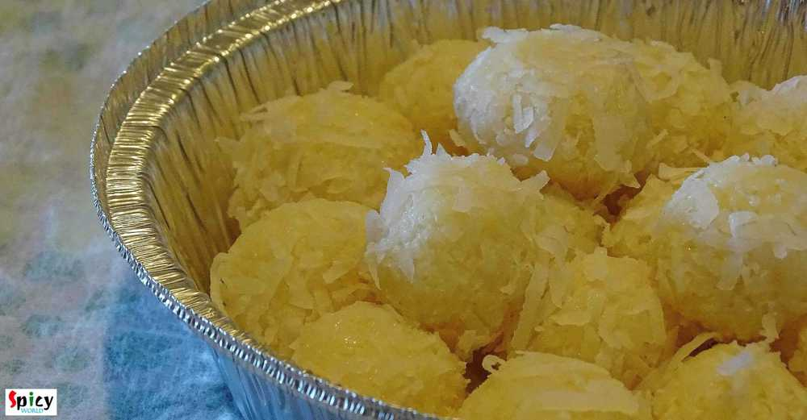

Simple and Easy Recipes

Veg Recipe
Dec 4, 2015
Last tuesday 'he' gave me a call from office at 5:00 pm and requested me to make some 'chatpata' snacks which will go very well with tea. So, I had exactly 1 hour in my hand to make something. Don't know why, but suddenly a thought of spending evening time in India, came in my mind. My grandpa used to bring different kinds of snacks like 'samosa', 'nimki', 'vegetable chop', 'kachori', 'beguni' etc ...


Nonveg Recipe
Dec 2, 2015
This snack is a very popular street food in West Bengal. You will enjoy these croquettes more from small street food shop / gumti / jhupri , though I don't have any experience of eating 'chingrir chop' from any restaurant. In US, there is no 'gumti', thats why I had to make those in my kitchen and brought the exact taste from Bengal. They were really delicious and we enjoyed them with chilli sauce ...

Veg Recipe
Dec 1, 2015
I know making 'naroo' is a really time consuming task. Specially when you have puja in your house, there are several works to do. Here is the shortcut version of 'naroo', which you can make in 10 minutes. The recipe is so simple and needs very few ingredients. Naroo, made with fresh coconut, tastes heavenly. But believe me you will love these too. Try this in your kitchen and let me know how it tu ...

Veg Recipe
Nov 28, 2015
I think almost every Bengali is familiar with this name. I love 'posto' or poppy seeds in any form. I made this dish on yesterday lunch along with some steamed rice. The fresh flavour of mustard oil and poppy seed paste always makes me crazy. I made it in microwave but you can also make this in oven. Try this in your kitchen and let me know how it turns out.

Nonveg Recipe
Nov 26, 2015
Here in Texas, one of the famous burger is 'pulled pork burger'. Everyone is a big fan of this burger. Last weekend I had some buns in my kitchen and some boneless chicken in my fridge. Then I thought to replace pork with chicken and some delicious 'pulled chicken burger's along with coke came out from my kitchen. I really love to make different types of burger but this one is my first posting on ...

Nonveg Recipe
Nov 26, 2015
Its true that I love eating pasta after coming usa. In India I was more fond of noodles, ramen or maggie. But recently I experimented couple of recipes on pasta and they turned out really well. I love my pasta on spicy side, that's why I mentioned it in the title. After baking with cheese, the taste of this dish became phenomenal. If you do not want to bake or use cheese, then make this dish witho ...
")
Veg Recipe
Nov 25, 2015
I have a friend in New Jersy, Monica, who makes the best chana masala ever. I learned this recipe from her. Since we moved from Jersy I missed her and her cooking very much. This is a punjabi dish, goes very well with bhatura, puri or roti. The recipe is very simple and it tastes delicious.

Veg Recipe
Nov 24, 2015
'Diwali' is the celebration of light and sound. Its been two years I am away from home (Kolkata). My papa used to buy me lots of crackers a day before diwali, we toast them in sunlight and in the evening of diwali my (maternal) uncle bought me some more crackers for his 'vagni'. Then around 8 pm me and my papa used to decorate our roof with candles and after that we started doing fireworks with ou ...

Nonveg Recipe
Nov 21, 2015
When an inch of oil or ghee floats upon gravy, yes its 'mughlai nawabi dish'. 'Nawab' means king. This category of curries have nice colored, rich, thick, creamy gravy. 'Chicken Korma' is my favourite one. You can easily eat this curry once in a month along with 'biriyani', 'pulaao', 'butter naan' or 'rumali roti'. Do not put this kind of food in your regular diet because you have to make or eat k ...
")
Nonveg Recipe
Nov 20, 2015
You know winter is coming and all you need is a bowl of warm soup. You can put many vegetables and protiens in it. Soup is very healthy meal for kids. It is also very helpful for sick people. Specially in winter, you can get many varieties of vegetables from grocery store. Then why not make some soup? This one is a very simple and easy recipe. I mentioned 'desi' style because i used some whole spi ...